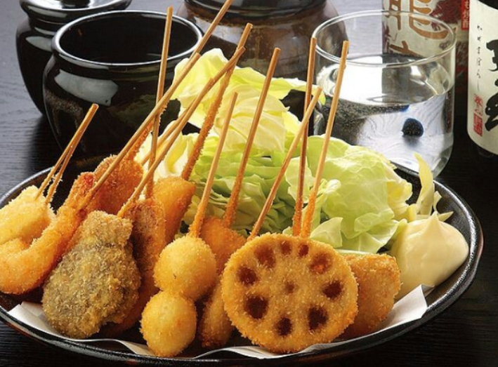

▶ 추천 장소
| ‘먹다가 망한다’는 뜻의 ‘구이다오레(食い倒れ)’라는 말이 있을 정도로 일본은 어디를 가더라도 맛있는 것이 많다. 그중에서도 최고봉은 역시 오사카 음식일 것이다. | |
|  | 쫄깃하고 통통한 문어의 맛을 그대로 느낄 수 있는 타코야키, 길거리에서 쉽게 볼 수 있는 튀김 꼬치 구시카쓰, 고기 육수에 각종 토핑을 얹어 먹는 라멘 등 오사카는 맛있는 음식이 정말 많기 때문에 맛있는 먹거리를 좋아하는 사람들에게 특히 추천한다. |
| 또한, 오사카 여행에서는 하루, 이틀 정도 투자해 근교 여행을 하는 것도 추천한다. 일본의 옛 정취를 고스란히 느낄 수 있는 교토, 자유롭게 노니는 사슴들을 만나볼 수 있는 나라 등 간사이 지방에는 오사카에서 어렵지 않게 갈 수 있는 아름다운 도시가 많다.*팁: 일본은 교통비가 꽤 부담스러운 곳이다. 오사카 주유 패스는 오사카 시내 대중교통 이용료뿐만 아니라 일부 관광지 입장료도 포함되어 있으며, 간사이 쓰루 패스는 오사카뿐만 아니라 고베, 교토, 나라 등 근처 도시에서도 사용할 수 있으니 계획에 따라 미리 교통 패스를 알아보고 가는 것을 추천한다. |